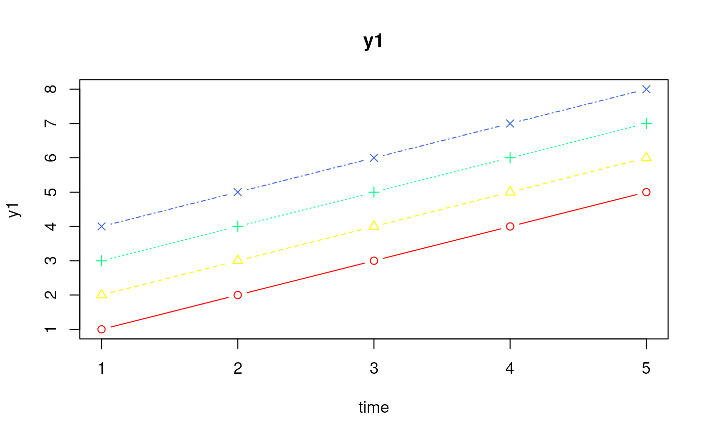
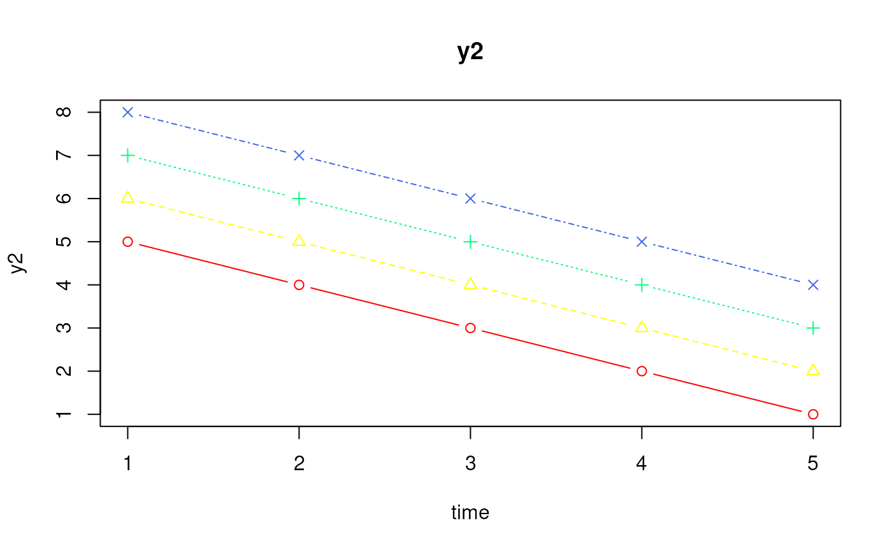
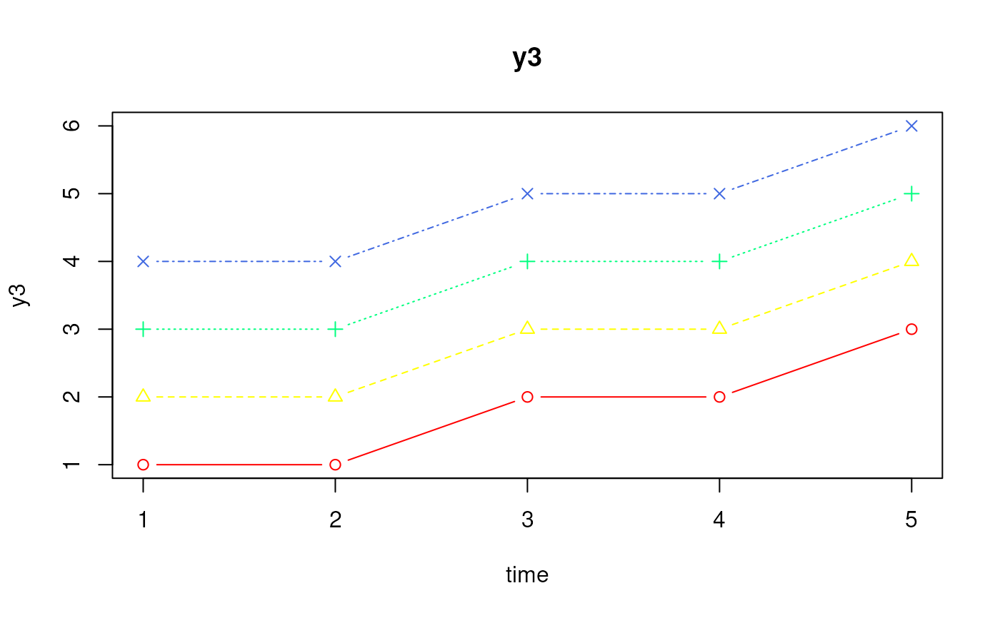
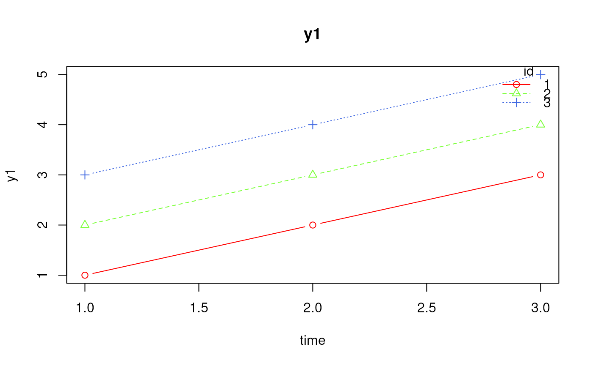
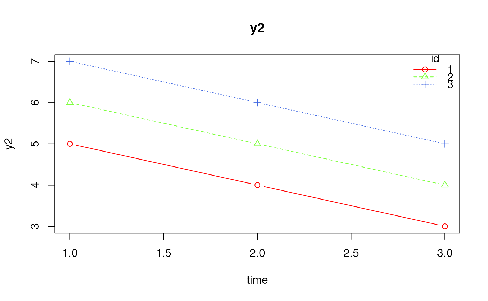
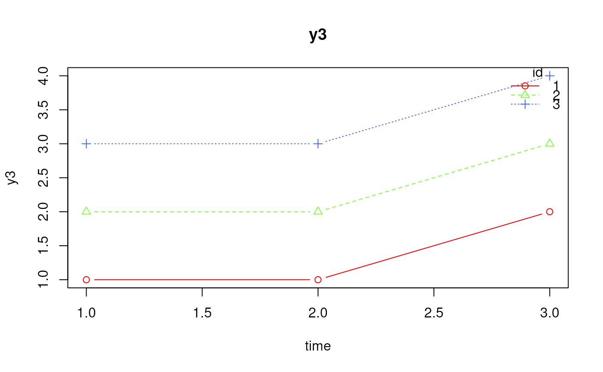

The function creates one time-series plot for each observed variable. Within each plot, trajectories are overlaid by ID.
Usage
PlotByID(
data,
id,
time,
observed,
ids = NULL,
times = NULL,
type = "b",
pch = NULL,
lty = NULL,
col = NULL,
xlab = NULL,
ylab = NULL,
main = NULL,
xlim = NULL,
ylim = NULL,
legend = FALSE,
ask = NULL,
...
)Arguments
- data
Data frame. A data frame object of data for potentially multiple subjects that contain a column of subject ID numbers (i.e., an ID variable), a column indicating subject-specific measurement occasions (i.e., a TIME variable), at least one column of observed values.
- id
Character string. A character string of the name of the ID variable in the data.
- time
Character string. A character string of the name of the TIME variable in the data.
- observed
Character vector. A vector of character strings of the names of the observed variables in the data.
- ids
Optional vector. ID values to plot. If
NULL, all available IDs are plotted.- times
Optional vector of time values. If
NULL, all available time points are plotted. If supplied, the range oftimesis used to subset the data. For example,times = c(0, 9)plots all rows with time values from 0 to 9, inclusive.- type
Character string. Plot type passed to
graphics::lines(). Default is"b".- pch
Optional vector of plotting characters. If
NULL, plotting characters are generated automatically by ID. Recycled to match the number of plotted IDs.- lty
Optional vector of line types. If
NULL, line types are generated automatically by ID. Recycled to match the number of plotted IDs.- col
Optional vector of colors. If
NULL, colors are generated automatically by ID. Recycled to match the number of plotted IDs.- xlab
Optional character string. Label for the x-axis. If
NULL, the name of the time variable is used.- ylab
Optional character string. Label for the y-axis. If
NULL, the observed variable name is used.- main
Optional character string. Plot title prefix. If
NULL, the observed variable name is used.- xlim
Optional vector of length 2. Limits for the x-axis.
- ylim
Optional numeric vector of length 2. Limits for the y-axis. If
NULL, limits are computed separately for each observed variable.- legend
Logical. If
TRUE, add a legend identifying IDs.- ask
Logical. If
TRUE, ask before drawing the next observed-variable plot. The default isTRUEin interactive sessions when plotting more than one observed variable.- ...
Additional arguments passed to
graphics::lines().
See also
Other Dynamic Modeling Utility Functions:
CheckDynData(),
DeleteInitialNA(),
DeltaTByID(),
DetrendByID(),
ElapsedTimeByID(),
FilterByID(),
InitialNA(),
InsertNA(),
LagByID(),
MakeClockTime(),
RegularizeTimeByID(),
ReplaceMissingCode(),
ResolveDuplicateIDTime(),
RoundClockTime(),
ScaleByID(),
SubsetByID(),
SummaryByID()
Examples
data <- data.frame(
id = rep(1:4, each = 5),
time = rep(1:5, times = 4),
y1 = c(
1, 2, 3, 4, 5,
2, 3, 4, 5, 6,
3, 4, 5, 6, 7,
4, 5, 6, 7, 8
),
y2 = c(
5, 4, 3, 2, 1,
6, 5, 4, 3, 2,
7, 6, 5, 4, 3,
8, 7, 6, 5, 4
),
y3 = c(
1, 1, 2, 2, 3,
2, 2, 3, 3, 4,
3, 3, 4, 4, 5,
4, 4, 5, 5, 6
)
)
data
#> id time y1 y2 y3
#> 1 1 1 1 5 1
#> 2 1 2 2 4 1
#> 3 1 3 3 3 2
#> 4 1 4 4 2 2
#> 5 1 5 5 1 3
#> 6 2 1 2 6 2
#> 7 2 2 3 5 2
#> 8 2 3 4 4 3
#> 9 2 4 5 3 3
#> 10 2 5 6 2 4
#> 11 3 1 3 7 3
#> 12 3 2 4 6 3
#> 13 3 3 5 5 4
#> 14 3 4 6 4 4
#> 15 3 5 7 3 5
#> 16 4 1 4 8 4
#> 17 4 2 5 7 4
#> 18 4 3 6 6 5
#> 19 4 4 7 5 5
#> 20 4 5 8 4 6
PlotByID(
data = data,
id = "id",
time = "time",
observed = paste0("y", 1:3),
ask = FALSE
)



PlotByID(
data = data,
id = "id",
time = "time",
observed = paste0("y", 1:3),
ids = 1:3,
times = c(1, 3),
legend = TRUE,
ask = FALSE
)


